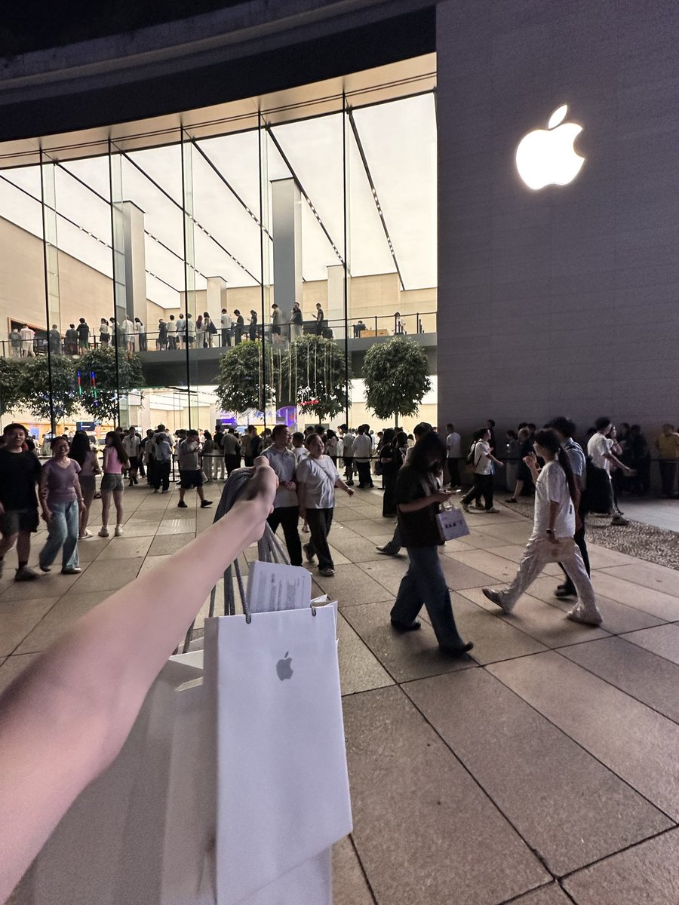
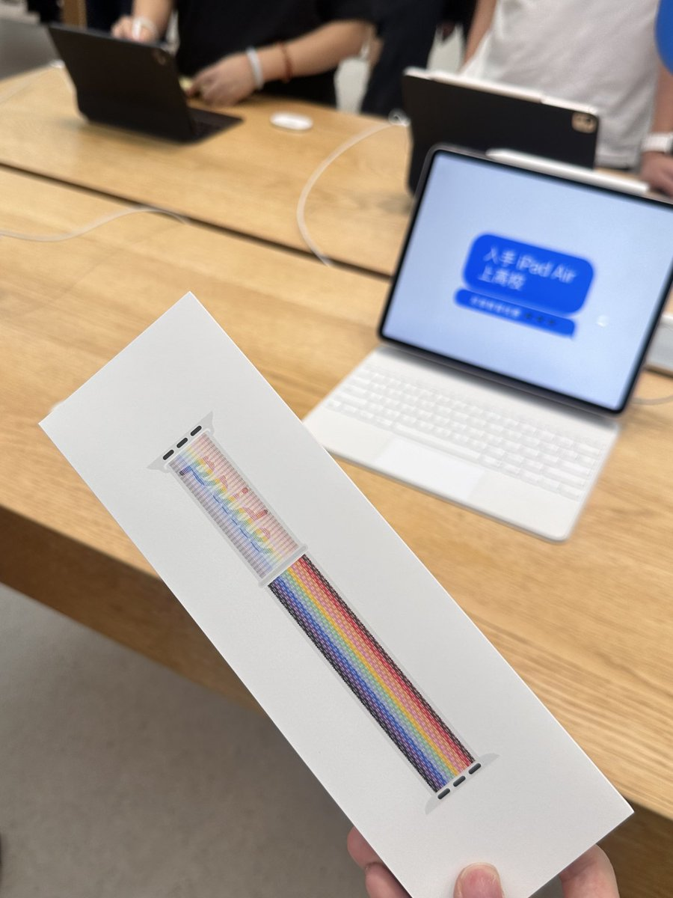
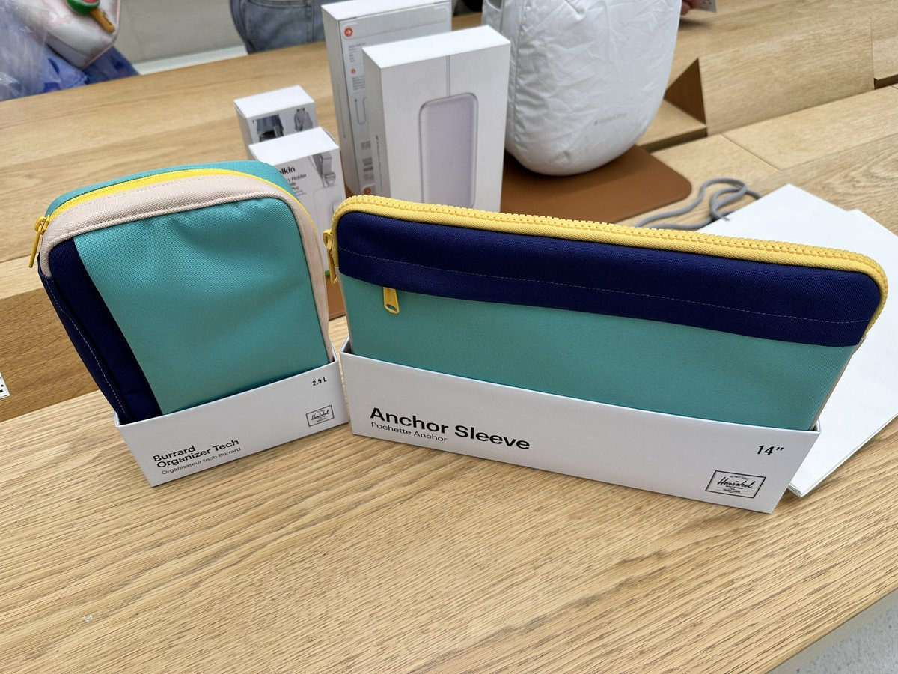

小虚空🍥
@tokerumaisurii
@hiner233 这个22款的Pride表达是我认为苹果做得最漂亮的表带（之一）。不是因为是Pride才偏心，而是这个看上去很丝滑好看挺自然的，其它几代Pride也是远远不及。



hiner
@hiner233
嗯别人都在买 iPhone 17 我在买 22 款的 Pride 和已下架的包
本来真的只是去摸新机的 但是后来看到 Apple 天一留了江浙沪最后一根 41mm 的表带就买了
又想去摸之前看的 Herschel Only at Apple 的两个包 结果官网售完了😭 不死心去问了一下 从仓库拿了两个出来 告诉我库存不多了 一咬牙两个都买了（ https://t.co/tV8g2BhsYe